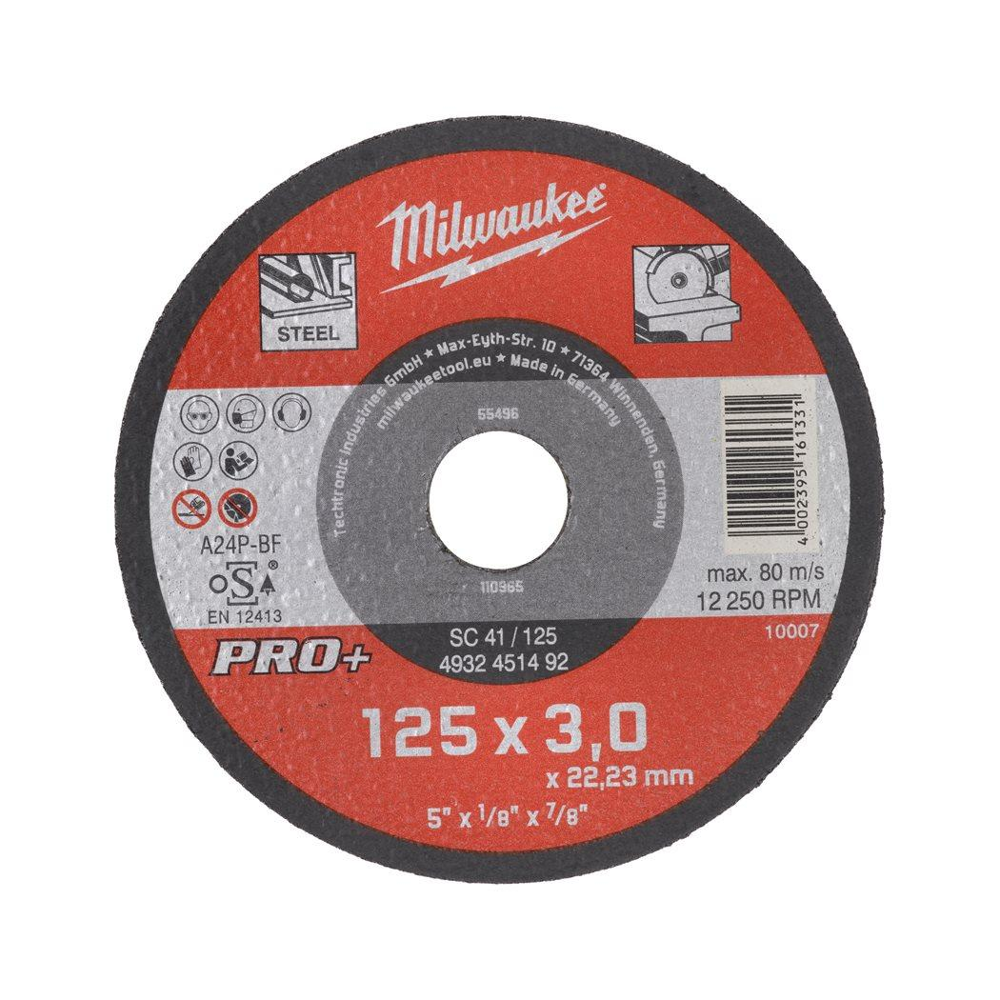
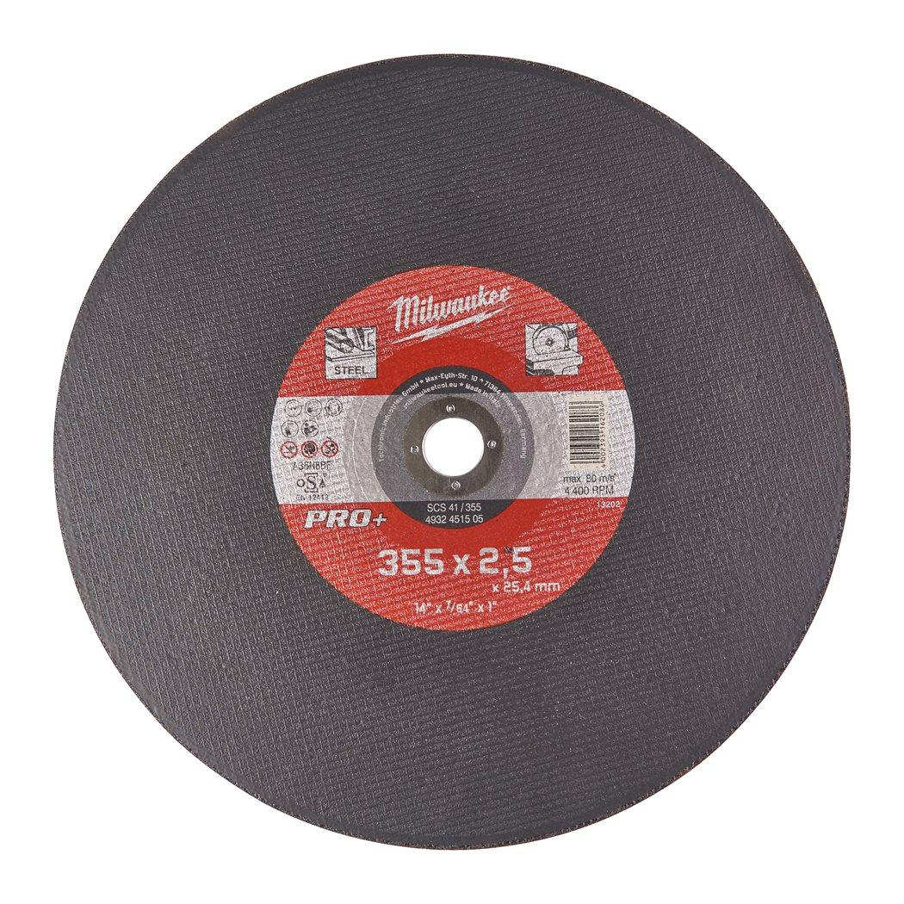
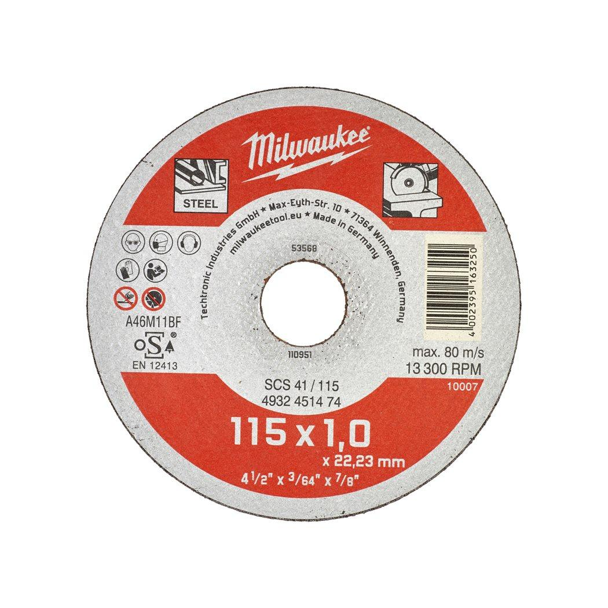
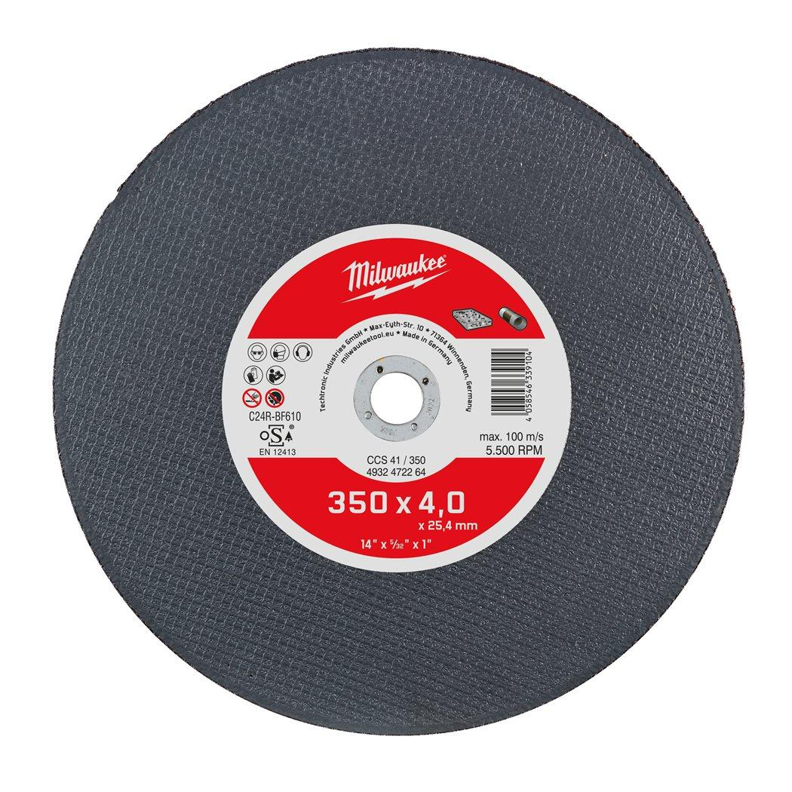
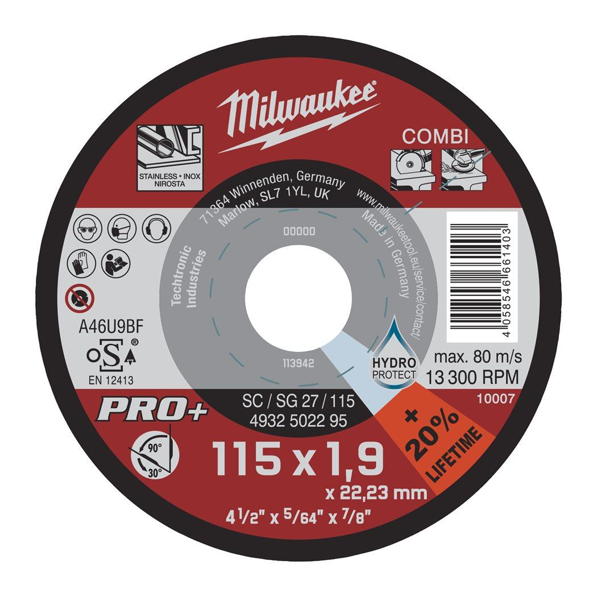

Features
- Applications: Most suitable for stainless and acid-resistant steel, hardox, heat-resistant cast steel, spring steel, mild and tool steel.
- Characteristics: Pro+ technology for best lifetime: Hydro-protected against moisture for longer lasting power. Greater performance and longer runtime than the 1 mm pro+ and therefore cordless optimised. Lower material loss, less sparks. Made in Germany.
- *Orders are only possible in master carton (with 50 x 4932498201). Minimum order quantity is 50 x 4932498201 (=1 master carton). Order quantities greater than 50 pcs are to be ordered in multiples of 50 pcs (ie. 100, 150, 200...).
Information
| Fits MILWAUKEE® | SCS 42 / 125 |
| Bore size (mm) | 22.2 |
| Disc diameter (mm) | 125 |
| Pack quantity | 1 |
| Thickness (mm) | 0.8 |
| Article Number | 4932498201 |
| EAN | 4058546520700 |